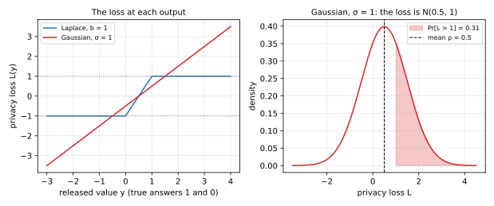
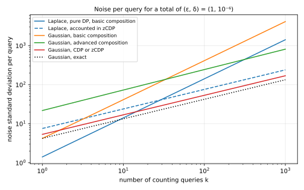

Four Definitions of Differential Privacy and Their Budgets
Pure, approximate, concentrated and zero-concentrated differential privacy, each budgeted to the same reference
Differential privacy comes in several definitions, and each one keeps its privacy budget in its own unit. This note explains four of them: pure, approximate, concentrated and zero-concentrated differential privacy. Each gets the same treatment: the reasoning behind it, its definition, the mechanism that goes with it, how its budget adds up over many releases, and how to spend a budget so that the whole release meets one common reference guarantee. A running example of a hundred published counts puts a number on each answer, and a final section weighs the four against each other. The main text states each result with the idea of its proof, and the appendices give every proof in full.
A privacy budget is a limit on how much a release may reveal about any one person. Analysts spend it query by query, and the total must stay within the limit. But “how much” depends on which definition of differential privacy (DP) you use, because each definition measures the revealed information in its own unit. Pure DP measures it with one number \(\varepsilon\), and approximate DP adds a second number \(\delta\). Concentrated differential privacy (CDP) uses two numbers, a mean and a spread of a quantity introduced below, while zero-concentrated differential privacy (zCDP) uses a single number \(\rho\). A budget of \(\rho = 0.02\) and a budget of \(\varepsilon = 1\) cannot be compared until both are written in the same unit.
This note shows how to budget in each of the four definitions, and how to convert every budget to one reference so that the four can be compared. The organizing idea is that all four definitions bound the same random quantity, the privacy loss, which says how much more likely an output is with a person’s record than without it. It is negative for an output that is less likely with the record. The definitions differ only in how they bound it. Pure DP bounds its largest value, approximate DP lets it exceed a limit in rare cases, and the two concentrated definitions bound its average and how far it strays from that average. The last two exploit a fact that the first two ignore. Over many releases, positive and negative losses partly cancel, so their total grows far more slowly than the sum of their worst cases.
The running example is a statistics office that holds records on 100,000 people and publishes 100 counts about them, such as how many people have each of 100 medical conditions. One person may have many conditions, so the office plans for the worst case, in which adding or removing one person’s record changes every one of the 100 counts by one. The office wants the whole release to satisfy one reference guarantee, approximate DP with \(\varepsilon = 1\) and \(\delta = 10^{-6}\), whose meaning Section 3 explains. The question each section answers is how much random noise each count needs for the release to meet that reference. The same noise can be certified more or less cheaply depending on the definition used to add up its cost, and less noise means more accurate counts. So a definition whose bookkeeping needs less noise is, for this release, the better one. You need basic probability to follow the note: densities, expectations, the normal distribution and Markov’s inequality. Table 1 gives the question each section answers, and Table 2 lists the symbols.
| Section | The question it answers |
|---|---|
| Section 1 | What do all four definitions compare, and what is the common reference? |
| Section 2 | What is the strictest guarantee, and how do you budget with it? |
| Section 3 | What guarantee admits Gaussian noise, and why do its composition theorems waste budget? |
| Section 4 | What if the definition bounds the average loss and its spread? |
| Section 5 | Can one number do the same job, and be easier to budget? |
| Section 6 | Which definition should you use, and what does each cost? |
| Section 7 | Complete proofs of every result in the note. |
| Symbol | Meaning |
|---|---|
| \(D \sim D'\) | two neighbouring datasets: one is the other with one person’s record added or removed |
| \(M\); \(P\), \(Q\); \(p\), \(q\) | a mechanism; the distributions of its output on \(D\) and on \(D'\); their densities |
| \(L\) | the privacy loss, \(\ln(p/q)\) at the released output |
| \(\Delta_1 f\), \(\Delta_2 f\) | the sensitivity of a statistic \(f\): the most one record can change it, as a sum of absolute changes (\(\ell_1\)) or as a Euclidean length (\(\ell_2\)) |
| \(b\), \(\sigma\) | the scale of Laplace noise, and the standard deviation of Gaussian noise |
| \(s\) | the sensitivity measured in standard deviations of Gaussian noise, \(\Delta_2 f/\sigma\) |
| \(\varepsilon\), \(\delta\) | the parameters of pure and approximate DP |
| \(\mu\), \(\tau\) | the parameters of concentrated DP, a bound on the mean of the loss and on its spread |
| \(\rho\) | the parameter of zero-concentrated DP |
| \(k\); \(\varepsilon_0\), \(\delta_0\), \(\rho_0\) | the number of queries; the budget of one query, in each unit |
| \(D_\alpha\), \(\alpha\); \(\lambda\) | the Rényi divergence of order \(\alpha\); the variable \(\lambda\) of an exponential moment \(\mathbb E[e^{\lambda X}]\) |
| \(\Phi\) | the standard normal cumulative distribution function |
1 The common ground
The four definitions demand different things, but they all compare the same two distributions and can all be read through the same quantity. This section introduces those shared pieces, then fixes the reference guarantee that every budget will be converted to and the plan that each of the next four sections follows.
1.1 Neighbouring datasets and mechanisms
Take two datasets \(D\) and \(D'\) that differ in one person: one of them contains that person’s record and the other does not. Such datasets are called neighbouring, written \(D \sim D'\). Some authors call two datasets neighbouring when one record is replaced by another instead. The proofs below work for either choice, and this note uses adding or removing a record throughout.
A mechanism \(M\) is a randomized procedure that takes a dataset and releases an output. Run on \(D\), it releases an output drawn from a distribution we call \(P\). Run on \(D'\), it releases one drawn from a distribution \(Q\). We write \(p\) and \(q\) for their densities, or their probabilities when the outputs are discrete. The proofs assume that both are positive at every output, so that their ratio, which the next section takes the logarithm of, is always defined. That holds for the Laplace and Gaussian mechanisms that this note uses.
Every privacy definition asks that \(P\) and \(Q\) be close, for every neighbouring pair. The definitions below bound \(P\) in terms of \(Q\), so they are required in both orders, with the roles of \(D\) and \(D'\) swapped as well. If \(P\) and \(Q\) were equal, the output would reveal nothing about whether the person’s record was used. Without noise they could not be close, because a statistic that differs on \(D\) and \(D'\) would give two different outputs, each impossible under the other dataset. A statistic \(f\), such as a count, has a sensitivity, the most it can change between neighbouring datasets. Adding or removing one person changes a count by at most one, so a count has sensitivity 1. A mechanism adds noise to \(f(D)\), and the noise must be large compared with the sensitivity, so that the two possible answers \(f(D)\) and \(f(D')\) blur into each other.
1.2 The privacy loss
To compare \(P\) and \(Q\), look at each output in turn and ask how much more likely it is under one than under the other. Consider an attacker who sees the output \(y\) and wants to know whether the data were \(D\) or \(D'\). By Bayes’ rule, the attacker’s odds after seeing \(y\) are the odds before, multiplied by the ratio of the two likelihoods:
\[ \frac{\Pr[D \mid y]}{\Pr[D' \mid y]} = \frac{\Pr[D]}{\Pr[D']} \cdot \frac{p(y)}{q(y)}. \tag{1}\]
So the ratio \(p(y)/q(y)\) is exactly what the output teaches the attacker. Taking its logarithm turns this multiplication of odds into addition, which will matter when many outputs are released and their effects pile up. The privacy loss of the output \(y\) is that logarithm:
\[ L(y) = \ln \frac{p(y)}{q(y)}. \tag{2}\]
A positive loss means that \(y\) is more likely when the person’s record is in the data, so seeing \(y\) moves the attacker towards \(D\). A negative loss moves the attacker towards \(D'\). The output is random, so the loss of the released output is random too. We write \(L\) for this privacy loss random variable, the loss at an output drawn from \(P\). Drawing it from \(P\) means looking at the world where the data are \(D\); the world of \(D'\) is covered by the same definitions applied to the swapped pair, whose loss is \(-L\).
The running example shows the two shapes this loss can take. Suppose the count is 1 on \(D\) and 0 on \(D'\). With Laplace noise of scale 1, the output has density \(e^{-|y - 1|}/2\) under \(P\) and \(e^{-|y|}/2\) under \(Q\). The constants cancel in the ratio, and the logarithm of a ratio of exponentials is the difference of the exponents, so the loss is \(|y| - |y - 1|\). That loss climbs from \(-1\) to \(1\) as \(y\) moves from 0 to 1 and stays flat outside that interval. With Gaussian noise of standard deviation 1, the densities are proportional to \(e^{-(y-1)^2/2}\) and \(e^{-y^2/2}\), so the loss is \((y^2 - (y-1)^2)/2 = y - 1/2\). That loss is a straight line, with no bound in either direction. The left panel of Figure 1 plots both.

Since the Gaussian output is \(Y = 1 + Z\) with standard normal noise \(Z\), its loss \(Y - 1/2 = 1/2 + Z\) is itself normal, with mean \(1/2\) and variance 1. That is the right panel of Figure 1. The loss is above 1 with probability 0.3085, and it can be arbitrarily large, but large values are rare.
The four definitions are four ways of bounding this random variable. Pure DP asks that it never exceed \(\varepsilon\). Approximate DP lets it exceed \(\varepsilon\), as long as the excess carries probability at most \(\delta\) in a sense Section 3 makes precise. Concentrated DP bounds its average and asks that it stray from the average no more than a normal variable would. Zero-concentrated DP bounds all its exponential moments at once, the averages \(\mathbb E[e^{\lambda L}]\) for every positive \(\lambda\).
1.3 The reference and the plan
A budget written in one definition’s unit says nothing to someone who uses another, so the four need a common unit. That unit is approximate DP with a fixed \(\delta\), for two reasons. Every one of the four definitions implies an approximate DP guarantee, so every budget can be converted into it. And approximate DP is a statement about events, which is what an attacker sees and what laws, papers and libraries report.
The value of \(\delta\) follows a common rule: at most \(1/n^{1.1}\) for \(n\) people, rounded down to a power of ten. Section 3 explains why \(\delta\) must be smaller than \(1/n\), and the exponent 1.1 makes it smaller by a factor that grows with \(n\). For \(n = 100{,}000\) people, \(n^{1.1} = 10^{5.5}\), so \(1/n^{1.1}\) is about \(3.2 \times 10^{-6}\), which rounds down to \(\delta = 10^{-6}\), ten times below \(1/n\). The value \(\varepsilon = 1\) is a common, moderate choice, and any other value would serve for the comparison. With it, the reference for the whole release is approximate DP with \((\varepsilon, \delta) = (1, 10^{-6})\).
Budgeting under any definition then takes three steps. First, find the budget in the definition’s own unit that converts to the reference. Second, split it across the queries with the definition’s composition rule. Third, turn each query’s share into a noise scale with the definition’s mechanism.
Each of the next four sections follows the same plan, under the same headings: why the definition was introduced, its definition, its mechanism, composition, budgeting to the reference, and its limits. The main text states every result and says in a sentence or two how its proof goes. The full proofs are in Section 7, and every number comes from the script code/notes/privacy_budgets.py, which the test tests/test_notes_privacy_budgets.py checks.
2 Pure differential privacy
Pure DP is the original definition and the strictest of the four. This section shows that it caps the privacy loss at every output, that Laplace noise achieves it, and that its budget adds up linearly, so that the running example needs a lot of noise.
2.1 Why it was introduced
Dwork, McSherry, Nissim and Smith (2006) wanted a guarantee that holds whatever the attacker already knows and whatever the attacker does with the output. Their answer was to ask that no output be much more likely with a person’s record than without it. Then the attacker’s odds, by Bayes’ rule in Equation 1, can move by at most a fixed factor, whatever the prior and whatever the output. The guarantee holds at every output, including the most unlucky one, which makes it simple to state and simple to reason about.
2.2 The definition
The definition asks this for every set of outputs, not only for single outputs, because an attacker may look at any property of the output.
Definition 1 (Pure differential privacy) A mechanism \(M\) is \(\varepsilon\)-DP if, for every pair of neighbouring datasets \(D \sim D'\) (in both orders) and every set \(S\) of outputs, \[ \Pr[M(D) \in S] \le e^{\varepsilon} \Pr[M(D') \in S]. \tag{3}\]
The requirement on sets is equivalent to a requirement on the privacy loss at each output. If the loss never exceeds \(\varepsilon\) in absolute value, every set gets at most \(e^\varepsilon\) times more probability under \(P\) than under \(Q\). Conversely, if the loss exceeded \(\varepsilon\) on a set of outputs of positive probability, that set itself would break the definition.
Proposition 1 A mechanism is \(\varepsilon\)-DP if and only if, for every neighbouring pair, its privacy loss satisfies \(|L(y)| \le \varepsilon\) at every output \(y\), except perhaps on a set of outputs of probability zero.
The proof in Section 7.1 writes the probability of a set as the integral of \(e^{L} q\) over it, and takes as the set the outputs where the loss is too large.
2.3 Its mechanism: Laplace noise
The Laplace mechanism adds noise from the Laplace distribution \(\mathrm{Lap}(b)\), whose density \(e^{-|z|/b}/(2b)\) falls off exponentially on both sides of zero at a rate set by the scale \(b\). Its standard deviation is \(\sqrt 2\, b\). The loss of the Laplace mechanism is flat outside the interval between the two true answers, as Figure 1 shows, so it is bounded. For a statistic with several coordinates, the sensitivity that matters is the \(\ell_1\) sensitivity \(\Delta_1 f\): over all neighbouring pairs, the largest sum of the absolute changes of the coordinates.
Theorem 1 (Laplace mechanism) Let \(f\) be a statistic with values in \(\mathbb R^d\) and \(\ell_1\) sensitivity \(\Delta_1 f\). The mechanism that releases \(f(D) + Z\), where the coordinates of \(Z\) are independent draws from \(\mathrm{Lap}(b)\) with \(b = \Delta_1 f/\varepsilon\), is \(\varepsilon\)-DP.
The proof in Section 7.2 shows that, in each coordinate, the two log-densities differ by at most the change in that coordinate divided by \(b\), by the triangle inequality. Summed over the coordinates, the loss is then at most \(\Delta_1 f/b = \varepsilon\). For a single count, \(\Delta_1 f = 1\), so the scale is \(1/\varepsilon\) and the standard deviation is \(\sqrt 2/\varepsilon\).
2.4 Composition
A release of many statistics runs many mechanisms on the same data, and later queries may be chosen after seeing earlier answers. The total privacy loss of the sequence is the sum of the losses of its steps, because the joint density is the product of the steps’ densities, each taken given the earlier outputs, and the logarithm turns that product into a sum. Each step’s loss is bounded by its own \(\varepsilon\), so the total is bounded by their sum.
Theorem 2 (Composition of pure DP) Run \(k\) mechanisms in sequence on the same dataset, where the \(i\)-th mechanism may depend on the outputs of the earlier ones and is \(\varepsilon_i\)-DP for every value of those outputs. The sequence, which releases all \(k\) outputs, is \(\varepsilon\)-DP with \[ \varepsilon = \varepsilon_1 + \dots + \varepsilon_k. \tag{4}\]
Section 7.3 derives it as the case \(\delta = 0\) of basic composition, Theorem 4.
2.5 Budgeting to the reference
A pure guarantee with \(\varepsilon = 1\) meets the reference outright, since it holds with \(\delta = 0\), which is less than \(10^{-6}\). So the pure DP budget is \(\varepsilon = 1\), and Theorem 2 says it may be split across the 100 counts in any way whose parts sum to 1. The even split gives each count \(\varepsilon_0 = 0.01\). By Theorem 1, each count then gets Laplace noise with scale \(1/0.01 = 100\) and standard deviation 141.42.
Pure DP cannot certify these counts more cheaply, and the reason shows what the other definitions improve. Draw the outputs from \(P\), with the person’s record in the data, and recall from Figure 1 that a Laplace count’s loss equals \(+\varepsilon_0\) whenever its noisy output lands above the larger true answer. Each count lands there with probability 1/2, and the noise of different counts is independent. In the worst case of the running example, the person changes all 100 counts, so all 100 land there together with probability \(2^{-100}\), and then the total loss is exactly \(100\,\varepsilon_0\). That outcome is absurdly rare, but it is possible, and pure DP charges for every possible outcome. The other three definitions charge less for rare outcomes. Accounted in zero-concentrated DP and converted to the reference, the same Laplace counts need only a standard deviation of 75.66 each, as Section 5.5 shows.
2.6 Limits
Pure DP has two limits. Its cost grows linearly with the number of queries, because it adds up worst cases that almost never occur together. And it rules out Gaussian noise, whose loss in Figure 1 is unbounded, so that Proposition 1 fails for every \(\varepsilon\). Gaussian noise matters for two reasons. It is calibrated to the \(\ell_2\) sensitivity \(\Delta_2 f\), the largest Euclidean length of the change, which can be far smaller than the \(\ell_1\) sensitivity: a change of 1 in each of \(d\) coordinates has \(\ell_1\) length \(d\) but \(\ell_2\) length \(\sqrt d\). And sums of Gaussian noise stay Gaussian, which makes their composition exact (Section 3.4). Approximate DP was introduced to admit it.
3 Approximate differential privacy
Approximate DP relaxes pure DP by an additive slack \(\delta\). This section shows what \(\delta\) measures, what the Gaussian mechanism achieves exactly, and why the classical composition theorems waste much of the budget when they are applied to Gaussian noise.
3.1 Why it was introduced
Dwork, Kenthapadi, McSherry, Mironov and Naor (2006) introduced the slack so that mechanisms with unbounded loss, chief among them the Gaussian mechanism, could have a guarantee. The idea is to tolerate outputs whose loss exceeds \(\varepsilon\) as long as they carry little probability. Dwork, Rothblum and Vadhan (2010) then found a second use for it: allowing a small \(\delta\) makes the cost of \(k\) queries grow like \(\sqrt k\) instead of \(k\).
3.2 The definition
Definition 2 (Approximate differential privacy) A mechanism \(M\) is \((\varepsilon, \delta)\)-DP if, for every pair of neighbouring datasets \(D \sim D'\) (in both orders) and every set \(S\) of outputs, \[ \Pr[M(D) \in S] \le e^{\varepsilon} \Pr[M(D') \in S] + \delta. \tag{5}\]
For a given \(\varepsilon\) and a given pair, the smallest \(\delta\) that works can be written through the privacy loss. That \(\delta\) is the largest gap \(P(S) - e^\varepsilon Q(S)\) over all sets \(S\). The set with the largest gap collects every output where \(p > e^\varepsilon q\), which is where the loss exceeds \(\varepsilon\), so the exact \(\delta\) is the gap of that set.
Proposition 2 (The smallest δ) For a fixed neighbouring pair and a fixed \(\varepsilon\), the smallest \(\delta\) for which the inequality of Definition 2 holds for every set \(S\) is \[ \delta(\varepsilon) = \Pr_{Y \sim P}[L(Y) > \varepsilon] - e^{\varepsilon} \Pr_{Y \sim Q}[L(Y) > \varepsilon]. \tag{6}\] A mechanism is \((\varepsilon, \delta)\)-DP if and only if \(\delta\) is at least this value for every ordered neighbouring pair.
The proof in Section 7.1 shows that adding an output where the loss exceeds \(\varepsilon\) to a set raises the gap \(P(S) - e^\varepsilon Q(S)\), and adding any other output lowers it. The curve \(\delta(\varepsilon)\) is called the privacy profile of the pair. Dropping the second, subtracted term gives a simpler bound, which is the one the two concentrated definitions use to reach the reference.
Corollary 1 (A tail bound suffices) If, for every ordered neighbouring pair, the privacy loss exceeds \(\varepsilon\) with probability at most \(\delta\) when the output is drawn from \(P\), then the mechanism is \((\varepsilon, \delta)\)-DP.
The proof is one line in Section 7.1. The bound is loose, because it ignores the subtracted term. For the Gaussian count with standard deviation 1 in Figure 1, the tail probability above \(\varepsilon = 1\) is 0.3085, while the exact \(\delta(1)\), computed with the formula of Theorem 3 below, is 0.1269.
The slack \(\delta\) must be tiny, because the definition allows anything to happen with probability \(\delta\), including a disclosure of a whole record. The next example makes that concrete.
Example 1 (Publishing records with probability δ) Consider the mechanism that goes through the dataset and publishes each person’s record, in full, with probability \(\delta\), independently of the others. Adding a person’s record \(x\) to a dataset leaves the other records’ coins unchanged. With probability \(1 - \delta\) the new record stays unpublished, and then the output has exactly the distribution it has without the record. So the two output distributions can disagree only on an event of probability \(\delta\), and any set of outputs has probabilities under the two datasets that differ by at most \(\delta\), in either direction. The mechanism is therefore \((0, \delta)\)-DP, with \(\varepsilon = 0\), the strongest value there is.
Yet it publishes \(n\delta\) records on average. With \(\delta = 1/n\) it publishes one person’s whole record on average, while claiming \(\varepsilon = 0\). With the reference’s \(\delta = 10^{-6}\) and \(n = 100{,}000\) people, the average is 0.1 records. That is still not nothing, which is why \(\delta\) is kept well below \(1/n\).
3.3 Its mechanism: Gaussian noise
The Gaussian mechanism adds independent normal noise with standard deviation \(\sigma\) to each coordinate, and its relevant sensitivity is the \(\ell_2\) sensitivity \(\Delta_2 f\). Write \(s = \Delta_2 f/\sigma\) for the sensitivity measured in standard deviations of noise.
The loss of this mechanism generalizes the example of Figure 1, where \(s = 1\). For a pair whose statistics differ by exactly \(\Delta_2 f\), the loss is normal with mean \(s^2/2\) and variance \(s^2\) under \(P\), and with mean \(-s^2/2\) and the same variance under \(Q\), as Lemma 4 derives. These distributions depend on nothing but \(s\), so \(s\) is all that matters for privacy. Putting them into Proposition 2 gives the exact privacy profile in closed form, a result due to Balle and Wang (2018).
Theorem 3 (Exact privacy profile of the Gaussian mechanism) Let \(f\) have \(\ell_2\) sensitivity \(\Delta_2 f\), and let the mechanism release \(f(D) + Z\) with \(Z\) normal with mean zero and covariance \(\sigma^2 I\). Write \(s = \Delta_2 f/\sigma\). Then for every \(\varepsilon \ge 0\) and every neighbouring pair, \[ \delta(\varepsilon) \le \Phi\Big(\frac{s}{2} - \frac{\varepsilon}{s}\Big) - e^{\varepsilon}\, \Phi\Big(-\frac{s}{2} - \frac{\varepsilon}{s}\Big), \tag{7}\] with equality for a pair whose statistics differ by exactly \(\Delta_2 f\). The right-hand side increases with \(s\).
The proof in Section 7.2 computes the loss, reads the two tail probabilities off the normal distribution, and shows by differentiation that the bound grows with \(s\). Because it grows with \(s\), you calibrate by solving for the largest \(s\) that gives the \(\delta\) you want, and set \(\sigma = \Delta_2 f/s\). For one count at the reference \((1, 10^{-6})\), the largest ratio is \(s = 0.23670\), so \(\sigma = 4.22\).
3.4 Composition
There are three ways to bound the cost of \(k\) approximate DP mechanisms. The first, basic composition, adds the \(\varepsilon\)’s and adds the \(\delta\)’s.
Theorem 4 (Basic composition) Run \(k\) mechanisms in sequence on the same dataset, where the \(i\)-th may depend on the earlier outputs and is \((\varepsilon_i, \delta_i)\)-DP for every value of them. The sequence is \((\varepsilon_1 + \dots + \varepsilon_k,\ \delta_1 + \dots + \delta_k)\)-DP.
The proof in Section 7.3 handles two mechanisms and extends by induction. It bounds the probability of a set of output pairs by first applying the second mechanism’s guarantee for each first output, then the first mechanism’s guarantee to the resulting average over the first output.
The second way, advanced composition, uses the fact that the losses of independent steps partly cancel, so that their sum grows like \(\sqrt k\). It pays for this with an extra slack \(\delta'\) of your choosing, the probability that the sum strays above a bound of that \(\sqrt k\) size.
Theorem 5 (Advanced composition) Run \(k\) mechanisms in sequence as in Theorem 4, each \((\varepsilon_0, \delta_0)\)-DP. For every \(\delta' > 0\), the sequence is \((\varepsilon, k\delta_0 + \delta')\)-DP with \[ \varepsilon = \varepsilon_0 \sqrt{2k \ln(1/\delta')} + k\varepsilon_0 (e^{\varepsilon_0} - 1). \tag{8}\]
This is Theorem 3.20 of Dwork and Roth (2014), from Dwork, Rothblum and Vadhan (2010), and its proof is cited here. When \(\delta_0 > 0\), that proof first shows that each pair of output distributions differs, on events of total probability at most \(\delta_0\), from a pair that is \(\varepsilon_0\)-DP, a step this note does not build. For \(\delta_0 = 0\), Corollary 3 in Section 5 proves a stronger version, with \(k\varepsilon_0^2/2\) in place of \(k\varepsilon_0(e^{\varepsilon_0} - 1)\).
The third way is to compute the composition exactly. That is rarely possible, but Gaussian counts are an exception. Releasing \(k\) counts, each with its own independent Gaussian noise, is the same as releasing one vector of \(k\) counts with Gaussian noise on each coordinate. Each count changes by at most 1, so the vector changes by at most \(\sqrt{1^2 + \dots + 1^2} = \sqrt k\) in Euclidean length, with equality in the running example’s worst case, where one person changes every count.
Corollary 2 (Composition of Gaussian queries) Let \(k\) statistics \(f_1, \dots, f_k\), fixed in advance, each have \(\ell_2\) sensitivity at most \(\Delta\), and release each with independent Gaussian noise of standard deviation \(\sigma\). For every neighbouring pair, the release’s \(\delta(\varepsilon)\) is at most the bound of Theorem 3 with \(s = \sqrt k\, \Delta/\sigma\), with equality for a pair that changes every \(f_i\) by exactly \(\Delta\).
The proof in Section 7.2 is the argument above. When the queries are chosen adaptively, the same bound still holds. That is the composition theorem of Gaussian differential privacy, a definition built on the Gaussian mechanism’s privacy profile (Dong, Roth and Su, 2022), and it is cited here.
3.5 Budgeting to the reference
Approximate DP’s budget is the reference itself, \((1, 10^{-6})\). What remains is to split it, and each of the three composition rules splits it differently.
With basic composition, each count gets an equal share of both parameters, \(\varepsilon_0 = 0.01\) and \(\delta_0 = 10^{-8}\). Calibrating each count exactly with Theorem 3 then gives \(\sigma = 412.36\). That is nearly three times the 141.42 of pure DP with Laplace noise. Each count’s normal loss must stay below the tiny threshold 0.01 except with probability \(10^{-8}\), which forces its spread \(s\) to be very small and so \(\sigma\) to be very large. Basic composition then adds up the hundred costs as if they happened together.
With advanced composition, you must also choose how to divide \(\delta\) between \(\delta'\) and the hundred \(\delta_0\)’s. The script tries a grid of divisions and keeps the one that needs the least noise. It gives \(\delta' = 3.95 \times 10^{-7}\), which is 39.5% of the budget, and \(\delta_0 = 6.05 \times 10^{-9}\) per count. Solving Theorem 5 for the per-count budget gives \(\varepsilon_0 = 0.01782\), and exact calibration gives \(\sigma = 243.80\), computed from the unrounded values. That is better than basic composition, but still worse than pure DP.
With Corollary 2, which is exact in the running example’s worst case, the whole release is one Gaussian mechanism with \(s = 10/\sigma\), since \(\sqrt{100} = 10\). The largest \(s\) that meets \((1, 10^{-6})\) is 0.23670, as for a single count, so \(\sigma = 10/0.23670 = 42.25\). That is ten times less noise than basic composition needs, for the same guarantee, so the loss came from the composition theorems and not from the definition.
3.6 Limits
The slack \(\delta\) is a probability of unconstrained failure, as Example 1 showed, so it must be chosen far below \(1/n\), and its meaning is easy to misread. The composition theorems lose much of the budget: basic composition adds worst cases, and advanced composition needs a \(\delta'\) and still loses a factor of almost six against the exact answer in the running example. Exact composition needs the privacy profile of each mechanism and a way to compute the profile of their composition. That is possible for Gaussian noise and, in general, with numerical accounting of the full distribution of the loss (Koskela, Jälkö and Honkela, 2020). The root cause is that a pair \((\varepsilon, \delta)\) is one point on the privacy profile, and composing single points throws away the shape of the loss. The two concentrated definitions keep that shape, in a summary simple enough to add up.
4 Concentrated differential privacy
Concentrated DP takes the facts that make advanced composition work and turns them into the definition. This section defines it through the mean and the spread of the privacy loss, shows that both add up over many queries, and converts the result to the reference.
4.1 Why it was introduced
Dwork and Rothblum (2016) noticed that the proof of advanced composition needs only two facts about the privacy loss of each step. The first is that the loss is small on average, and the second is that it strays from that average no more than a normal variable would. These two facts are enough because, over many steps, the averages add up while the fluctuations partly cancel. Dwork and Rothblum therefore turned the two facts into a definition of privacy: a mechanism is private in their sense when its privacy loss has a small average and fluctuates no more than a normal variable. With this definition, composition becomes bookkeeping. You add up the averages of the steps and add up their squared spreads, and you convert the total to approximate DP once, at the end. Bun and Steinke (2016) later called this definition mean-concentrated DP, to tell it apart from their own, which Section 5 covers.
4.2 The definition
The definition needs a precise meaning for “strays from its average no more than a normal variable would”. It compares exponential moments, the averages \(\mathbb E[e^{\lambda X}]\), which are large when \(X\) has large values with appreciable probability. A normal variable with variance \(\tau^2\) has exponential moments \(e^{\lambda^2 \tau^2/2}\) around its mean, a fact Lemma 3 derives. A variable is called subgaussian when its exponential moments are no larger than those.
Definition 3 (Subgaussian) A random variable \(X\) with mean \(m\) is \(\tau\)-subgaussian if, for every real \(\lambda\), \[ \mathbb E\big[e^{\lambda (X - m)}\big] \le e^{\lambda^2 \tau^2 / 2}. \tag{9}\]
Large deviations of a subgaussian variable are rare: by the Chernoff bound of Lemma 6, it exceeds its mean by \(t\) with probability at most \(e^{-t^2/(2\tau^2)}\), the same bound a normal variable with standard deviation \(\tau\) satisfies. Any variable confined to an interval of length \(2\tau\) is \(\tau\)-subgaussian; that is Hoeffding’s lemma, Lemma 7.
Definition 4 (Concentrated differential privacy) A mechanism \(M\) is \((\mu, \tau)\)-CDP if, for every pair of neighbouring datasets \(D \sim D'\) (in both orders), the privacy loss random variable \(L\) has mean at most \(\mu\) and is \(\tau\)-subgaussian.
The mean of the loss is the Kullback–Leibler divergence of \(P\) from \(Q\), a standard measure of how far apart two distributions are, and it is never negative. The parameter \(\mu\) therefore bounds how much the attacker gains on average, and \(\tau\) bounds how far an unlucky output can push the gain above that average.
4.3 Its mechanism
The Gaussian mechanism fits this definition exactly, since its loss is normal with mean \(s^2/2\) and standard deviation \(s\).
Proposition 3 The Gaussian mechanism of Theorem 3, with \(s = \Delta_2 f/\sigma\), is \((s^2/2,\ s)\)-CDP.
The proof in Section 7.2 uses the normal distribution of the loss. A pure DP mechanism also fits the definition: its loss lies between \(-\varepsilon\) and \(\varepsilon\), so Hoeffding’s lemma bounds its spread, and a separate argument bounds its mean.
Proposition 4 Every \(\varepsilon\)-DP mechanism is \((\varepsilon \tanh(\varepsilon/2),\ \varepsilon)\)-CDP. Since \(\tanh(x) \le x\), it is also \((\varepsilon^2/2,\ \varepsilon)\)-CDP.
Section 7.5 proves it. By this result, a Laplace count with budget \(\varepsilon_0\) is \((\varepsilon_0 \tanh(\varepsilon_0/2), \varepsilon_0)\)-CDP. Dwork and Rothblum state the mean as \(\varepsilon(e^\varepsilon - 1)/2\), which is larger.
4.4 Composition
When the queries are independent, the total loss is a sum of independent losses. Its mean is the sum of the means, and its exponential moment is the product of the steps’ exponential moments, so the squared spreads add.
Theorem 6 (Composition of CDP) Run \(k\) mechanisms independently on the same dataset, the \(i\)-th one \((\mu_i, \tau_i)\)-CDP. The release of all \(k\) outputs is \((\mu, \tau)\)-CDP with \[ \mu = \mu_1 + \dots + \mu_k, \qquad \tau = \sqrt{\tau_1^2 + \dots + \tau_k^2}. \tag{10}\]
Section 7.3 proves it, and also handles queries chosen adaptively. For those, it proves a bound on the upper tail of the total loss only, Lemma 5, which is all that the conversion below needs. Dwork and Rothblum state the full theorem for adaptive queries too.
The conversion to approximate DP uses the subgaussian tail. The loss exceeds \(\mu + t\) with probability at most \(e^{-t^2/(2\tau^2)}\), and setting that bound equal to \(\delta\) gives \(t = \tau\sqrt{2\ln(1/\delta)}\). Then Corollary 1 turns the tail bound into approximate DP.
Theorem 7 (From CDP to approximate DP) A \((\mu, \tau)\)-CDP mechanism is \((\varepsilon, \delta)\)-DP for every \(\delta\) between 0 and 1, and so is any mechanism whose loss satisfies \(\mathbb E_P[e^{\lambda(L - \mu)}] \le e^{\lambda^2\tau^2/2}\) for every \(\lambda \ge 0\) and every ordered neighbouring pair, with \[ \varepsilon = \mu + \tau \sqrt{2 \ln(1/\delta)}. \tag{11}\]
Section 7.4 proves it from Markov’s inequality applied to an exponential, which is the Chernoff bound.
4.5 Budgeting to the reference
The CDP budget is a pair, and many pairs convert to the same reference, so the pair depends on the noise. For Gaussian counts the two are tied together, since a Gaussian mechanism has \(\mu = \tau^2/2\), and Theorem 6 keeps that relation when Gaussian mechanisms are combined. So the budget for a release of Gaussian counts is the \(\tau\) that solves
\[ \frac{\tau^2}{2} + \tau \sqrt{2 \ln(1/\delta)} = 1. \tag{12}\]
At \(\delta = 10^{-6}\), \(\ln(1/\delta) = 13.8155\), and this quadratic gives \(\tau = 0.18692\) and \(\mu = 0.01747\). Composition adds the squared spreads, so each of the 100 counts gets \(\tau_0 = \tau/\sqrt{100} = 0.018692\). By Proposition 3, \(\tau_0 = 1/\sigma\) for a count, so \(\sigma = 53.50\). For Laplace counts, Proposition 4 gives each count a mean \(\varepsilon_0\tanh(\varepsilon_0/2)\) and a spread \(\varepsilon_0\), so the release has mean \(100\,\varepsilon_0\tanh(\varepsilon_0/2)\) and spread \(10\,\varepsilon_0\). The script solves Theorem 7 for the \(\varepsilon_0\) that makes the total 1. Since \(\varepsilon_0\tanh(\varepsilon_0/2)\) is almost exactly \(\varepsilon_0^2/2\) for a small \(\varepsilon_0\), this is nearly the Gaussian equation, and the solution is \(\varepsilon_0 = 0.01869\). The Laplace scale is then \(1/\varepsilon_0 = 53.50\) and the standard deviation \(\sqrt 2/\varepsilon_0 = 75.66\).
4.6 Limits
CDP has three limits. First, its budget is two numbers, and only their combination in Theorem 7 means anything to a reader. Second, the conversion is loose: 53.50 against the exact 42.25. Third, and most serious, it is not closed under post-processing, which means computing anything from the released output without the data. Bun and Steinke (2016) give a mechanism that is CDP but becomes not CDP after a step that uses only its output. A privacy definition should never be broken by computing on the released output without the data, because anyone can perform such a step. That defect is why zero-concentrated DP replaced it.
5 Zero-concentrated differential privacy
Zero-concentrated DP keeps the idea of concentrated DP but states it through one number and a family of measures of the distance between \(P\) and \(Q\), the Rényi divergences. This section shows that its budget simply adds up, that the Gaussian mechanism meets it exactly, that pure DP converts into it, and that its budget converts to the reference in one formula.
5.1 Why it was introduced
Bun and Steinke (2016) wanted the benefits of concentrated DP without its defects. Their definition bounds every exponential moment of the privacy loss by a single parameter \(\rho\). One parameter makes budgets easy to split. Rényi divergences can only shrink when the output is processed further, so the definition is closed under post-processing. And the Gaussian mechanism meets it with equality, so nothing is lost when the mechanism is translated into the definition.
5.2 The definition
The divergence is the Rényi divergence of order \(\alpha\). It averages the likelihood ratio raised to the power \(\alpha\), so a larger order puts more weight on the outputs where the ratio is large.
Definition 5 (Rényi divergence) For an order \(\alpha > 1\), the Rényi divergence of \(P\) from \(Q\) is \[ D_\alpha(P \| Q) = \frac{1}{\alpha - 1} \ln \mathbb E_{Y \sim Q}\Big[\Big(\frac{p(Y)}{q(Y)}\Big)^{\alpha}\Big]. \tag{13}\]
The divergence is an exponential moment of the privacy loss in disguise. Inside the expectation, one factor \(p/q\) can be absorbed into the distribution, which turns an average under \(Q\) into an average under \(P\).
Lemma 1 For every order \(\alpha > 1\), \[ D_\alpha(P \| Q) = \frac{1}{\alpha - 1} \ln \mathbb E_{Y \sim P}\big[e^{(\alpha - 1) L(Y)}\big]. \tag{14}\]
Proof.
- The expectation under \(Q\) is an integral against \(q\), and \((p/q)^\alpha q = (p/q)^{\alpha - 1} p\). So the expectation equals the average of \((p/q)^{\alpha - 1}\) under \(P\).
- By Equation 2, \(p/q = e^{L}\), so \((p/q)^{\alpha - 1} = e^{(\alpha - 1)L}\).
Definition 6 (Zero-concentrated differential privacy) A mechanism \(M\) is \(\rho\)-zCDP if, for every pair of neighbouring datasets \(D \sim D'\) (in both orders) and every order \(\alpha > 1\), \[ D_\alpha(P \| Q) \le \alpha \rho. \tag{15}\]
By Lemma 1, the definition bounds the exponential moments of the loss. Multiply both sides of \(D_\alpha \le \alpha\rho\) by \(\alpha - 1\), exponentiate, and write \(\lambda = \alpha - 1 > 0\), so that \(\alpha = \lambda + 1\). The condition becomes
\[ \mathbb E_P\big[e^{\lambda L}\big] \le e^{\lambda(\lambda + 1)\rho} \quad \text{for every } \lambda > 0. \tag{16}\]
A normal loss with mean \(\rho\) and variance \(2\rho\) has exactly these exponential moments, by Lemma 3, since \(\lambda\rho + \lambda^2 (2\rho)/2 = \lambda(\lambda + 1)\rho\). So \(\rho\)-zCDP says that the loss is no worse, in any exponential moment, than a normal loss with mean \(\rho\) and variance \(2\rho\). That is the loss of a Gaussian mechanism with \(s^2 = 2\rho\).
5.3 Its mechanism
Proposition 5 The Gaussian mechanism of Theorem 3 is \(\rho\)-zCDP with \(\rho = (\Delta_2 f)^2/(2\sigma^2) = s^2/2\), and no smaller \(\rho\) works when some pair attains the sensitivity.
The proof in Section 7.2 computes the exponential moment of the normal loss, which matches the bound exactly. Pure DP converts too, which lets a zCDP budget pay for Laplace noise as well.
Proposition 6 Every \(\varepsilon\)-DP mechanism is \((\varepsilon^2/2)\)-zCDP.
The proof in Section 7.5 bounds the mean of the loss by \(\varepsilon^2/2\) and its centred exponential moment by \(e^{\lambda^2\varepsilon^2/2}\), using Hoeffding’s lemma as for Proposition 4. Their product is \(e^{\lambda\varepsilon^2/2 + \lambda^2\varepsilon^2/2} = e^{\lambda(\lambda+1)\varepsilon^2/2}\), which is the condition with \(\rho = \varepsilon^2/2\). A Laplace count with budget \(\varepsilon_0\) is therefore \((\varepsilon_0^2/2)\)-zCDP.
5.4 Composition
The total loss of a sequence is the sum of the steps’ losses, and the exponential of a sum is a product. Averaging the last step first, for each value of the earlier outputs, bounds its factor by \(e^{\lambda(\lambda + 1)\rho_k}\), and repeating this step by step multiplies the bounds.
Theorem 8 (Composition of zCDP) Run \(k\) mechanisms in sequence on the same dataset, where the \(i\)-th may depend on the earlier outputs and is \(\rho_i\)-zCDP for every value of them. The sequence is \(\rho\)-zCDP with \[ \rho = \rho_1 + \dots + \rho_k. \tag{17}\]
Section 7.3 proves it.
A guarantee would be of little use if someone could break it by computing on the released output, so the next result checks that this is impossible, for zCDP and for pure and approximate DP alike.
Theorem 9 (Post-processing) Let \(g\) be any procedure, possibly randomized, that takes the output of \(M\) and does not look at the data. If \(M\) is \(\varepsilon\)-DP, \((\varepsilon, \delta)\)-DP or \(\rho\)-zCDP, then the mechanism that releases \(g\) applied to the output of \(M\) satisfies the same guarantee.
Section 7.6 proves it. For zCDP, the step that matters is Jensen’s inequality, which says that the average of a convex function, here \(x^\alpha\), is at least the function of the average.
The conversion to the reference applies Markov’s inequality to \(e^{\lambda L}\) and chooses the best \(\lambda\), which gives a normal-shaped tail.
Theorem 10 (From zCDP to approximate DP) A \(\rho\)-zCDP mechanism is \((\varepsilon, \delta)\)-DP for every \(\delta\) between 0 and 1, with \[ \varepsilon = \rho + 2\sqrt{\rho \ln(1/\delta)}. \tag{18}\]
Section 7.4 proves it. For a Gaussian mechanism, this is the same formula as Theorem 7: with \(\rho = s^2/2\), \(\mu = s^2/2\) and \(\tau = s\), both give \(s^2/2 + s\sqrt{2\ln(1/\delta)}\). Chaining Proposition 6, Theorem 8 and Theorem 10 gives an advanced composition theorem for pure DP, with a proof that this note completes.
Corollary 3 (Advanced composition of pure DP) Run \(k\) mechanisms in sequence as in Theorem 2, each \(\varepsilon_0\)-DP. For every \(\delta\) between 0 and 1, the sequence is \((\varepsilon, \delta)\)-DP with \[ \varepsilon = \frac{k \varepsilon_0^2}{2} + \varepsilon_0 \sqrt{2k \ln(1/\delta)}. \tag{19}\]
The proof in Section 7.5 chains the three results. Its second term is the same as in Theorem 5, and its first term is about half as large, since \(e^{\varepsilon_0} - 1\) is close to \(\varepsilon_0\) for a small \(\varepsilon_0\).
5.5 Budgeting to the reference
The zCDP budget for the reference is the largest \(\rho\) that Theorem 10 turns into \(\varepsilon = 1\) at \(\delta = 10^{-6}\). The conversion is a quadratic in \(\sqrt\rho\), namely \((\sqrt\rho)^2 + 2\sqrt{\ln(1/\delta)}\,\sqrt\rho - \varepsilon = 0\), and its positive root gives
\[ \rho = \Big(\sqrt{\ln(1/\delta) + \varepsilon} - \sqrt{\ln(1/\delta)}\Big)^2. \tag{20}\]
With \(\ln(1/\delta) = 13.8155\) and \(\varepsilon = 1\), Equation 20 gives \(\rho = 0.01747\). That is the whole release’s budget, and by Theorem 8 any split whose parts sum to it works. The even split gives each count \(\rho_0 = 1.747 \times 10^{-4}\).
Each count can then be paid for with either kind of noise. With Gaussian noise, Proposition 5 gives \(\sigma = 1/\sqrt{2\rho_0} = 53.50\), the same as under CDP. With Laplace noise, Proposition 6 gives \(\varepsilon_0 = \sqrt{2\rho_0} = 0.01869\), so the scale is 53.50 and the standard deviation is 75.66. That is the number promised in the pure DP section. The same Laplace noise, which pure DP certifies only at \(\varepsilon = 100 \times 0.01869 = 1.87\), meets the reference \((1, 10^{-6})\) once it is accounted in zCDP.
A single budget can also mix the two kinds of noise. A release might give its ten most important counts Gaussian noise with a larger \(\rho_i\) each, and the rest Laplace noise with a smaller one. The only rule is that the \(\rho_i\) add up to 0.01747.
5.6 Limits
The conversion of Theorem 10 is not exact. The running example needs a standard deviation of 53.50 under zCDP, against 42.25 with the exact profile, which is 1.266 times as much noise. Canonne, Kamath and Steinke (2020) give a sharper conversion, cited here, which closes part of that gap. The parameter \(\rho\) has no direct meaning for a reader, so a release is still reported in approximate DP, after a conversion. And zCDP cannot describe mechanisms that fail outright with a small probability, such as Example 1. Such a mechanism publishes, with positive probability, an output that is impossible without the person’s record. That falls outside this note’s assumption of positive densities, and its loss there is infinite, so every Rényi divergence is infinite. That exclusion is mostly a strength, but it also rules out some useful mechanisms whose analysis needs a \(\delta\), and it captures poorly the privacy gain of running a mechanism on a random subset of the records (Bun, Dwork, Rothblum and Steinke, 2018).
6 Trade-offs
Each of the four definitions has now been budgeted to the same reference. This section sets the results side by side, says which guarantees imply which, shows how the cost of each accounting grows with the number of queries, and ends with when to use each.
6.1 Side by side
Table 3 summarizes the four sections. Its last row is the answer to the running example’s question: the noise each count needs so that 100 counts meet \((1, 10^{-6})\).
| Pure DP | Approximate DP | CDP | zCDP | |
|---|---|---|---|---|
| What it bounds | the loss at every output | the gap between \(P(S)\) and \(e^\varepsilon Q(S)\) on every set \(S\) | the mean of the loss and its spread | every exponential moment of the loss |
| Parameters | \(\varepsilon\) | \(\varepsilon\), \(\delta\) | \(\mu\), \(\tau\) | \(\rho\) |
| Natural mechanism | Laplace | Gaussian | Gaussian | Gaussian, and Laplace through Proposition 6 |
| Composition | the \(\varepsilon\)’s add | basic adds both; advanced grows like \(\sqrt k\) at the cost of a \(\delta'\) | the \(\mu\)’s add and the \(\tau^2\)’s add | the \(\rho\)’s add |
| Budget for \((1, 10^{-6})\) | \(\varepsilon = 1\) | the reference itself, split by a composition rule | \(\mu = 0.01747\), \(\tau = 0.18692\) (Gaussian counts) | \(\rho = 0.01747\) |
| Post-processing | preserved | preserved | not preserved | preserved |
| Noise per count, \(k = 100\) | 141.42 (Laplace) | 412.36 (basic), 243.80 (advanced), 42.25 (exact) | 53.50 (Gaussian), 75.66 (Laplace) | 53.50 (Gaussian), 75.66 (Laplace) |
6.2 Which guarantee implies which
The definitions are not simply stronger or weaker versions of each other, and the results of this note say exactly how they relate. Pure DP is the strongest: an \(\varepsilon\)-DP mechanism is \((\varepsilon^2/2, \varepsilon)\)-CDP and \((\varepsilon^2/2)\)-zCDP, by Proposition 4 and Proposition 6, and it is \((\varepsilon, 0)\)-DP by definition. Both concentrated definitions imply approximate DP for every \(\delta\), by Theorem 7 and Theorem 10. None of these implications reverses. The Gaussian mechanism is zCDP and CDP but not pure DP, because its loss is unbounded. The mechanism of Example 1 is approximate DP but neither CDP nor zCDP, because its loss is infinite on some outputs.
So the concentrated definitions sit between the other two. They exclude the catastrophic failures that approximate DP allows, yet they admit the Gaussian noise that pure DP excludes. A zCDP guarantee is a whole curve of approximate DP guarantees, one for each \(\delta\), while an approximate DP guarantee is a single point on such a curve.
6.3 How the cost grows with the number of queries
The running example fixed the number of queries at 100. Table 4 and Figure 2 repeat the budgeting for other numbers of counts, always for a total of \((1, 10^{-6})\).
| Counts \(k\) | Laplace, pure DP | Laplace, zCDP | Gaussian, basic | Gaussian, advanced | Gaussian, CDP or zCDP | Gaussian, exact |
|---|---|---|---|---|---|---|
| 1 | 1.41 | 7.57 | 4.22 | 21.81 | 5.35 | 4.22 |
| 10 | 14.14 | 23.93 | 41.33 | 73.01 | 16.92 | 13.36 |
| 100 | 141.42 | 75.66 | 412.36 | 243.80 | 53.50 | 42.25 |
| 1000 | 1414.21 | 239.26 | 4122.63 | 810.72 | 169.18 | 133.60 |

The lines fall into two groups by their slope. Pure DP with Laplace noise and basic composition with Gaussian noise add worst cases, so their noise grows in proportion to \(k\). Everything else grows like \(\sqrt k\), because it lets the losses of different queries partly cancel. So the linear methods win for few queries and lose for many. For one count, pure DP needs a standard deviation of 1.41, a third of the best Gaussian’s 4.22, because a single Laplace count pays nothing for \(\delta\). Between the rows of Table 4, the script finds where the lines cross. The exact Gaussian overtakes pure DP at 9 counts, and Gaussian noise accounted in zCDP overtakes it at 15. Laplace noise accounted in zCDP beats Laplace noise accounted in pure DP from 29 counts on.
Advanced composition illustrates how much a loose theorem can cost. It overtakes basic composition only at 34 counts and pure DP only at 313. At 1000 counts, it needs 4.8 times the noise of zCDP accounting, even though both grow like \(\sqrt k\), because the per-query \(\delta_0\) it has to pay for is expensive for the Gaussian.
Among the methods that grow like \(\sqrt k\), the gaps stay nearly constant. zCDP accounting needs 1.27 times the noise of exact accounting at every \(k\) in Table 4, and Laplace noise in zCDP needs about \(\sqrt 2\) times the noise of Gaussian noise in zCDP. The second ratio comes from the variances: Laplace noise with scale \(1/\varepsilon_0\) has standard deviation \(\sqrt 2/\varepsilon_0\), while Gaussian noise with the same \(\rho_0 = \varepsilon_0^2/2\) has standard deviation \(1/\varepsilon_0\).
6.4 Which definition to use
The answer depends on the number of queries and on what has to be reported. For a handful of queries, or when the guarantee must hold with \(\delta = 0\), use pure DP with Laplace noise. It is the simplest to explain, and for eight counts or fewer it needs the least noise of all.
For many queries, account in zCDP. Convert the reference to a \(\rho\) budget with Equation 20, split \(\rho\) across the queries in any proportions, use Gaussian noise where you can and Laplace noise where a query needs it, and report the release in approximate DP. Every step is one line of arithmetic, every result composes adaptively, and post-processing is safe.
When every bit of accuracy matters, compute the final guarantee exactly rather than through a conversion. For Gaussian noise, the exact profile of Theorem 3 is a closed form, and in the running example it saves about a fifth of the noise. For other mechanisms, numerical accounting of the loss distribution does the same job. A common workflow is to plan the budget in zCDP and then certify the release with an exact accountant.
Concentrated DP is mostly of historical interest. For Gaussian noise its numbers are the same as zCDP’s, it needs two parameters, and it is not closed under post-processing. Approximate DP with the classical composition theorems is the definition to avoid as an accounting method. It is the right unit for reporting, but basic composition with Gaussian noise needed almost ten times the noise of exact accounting in the running example.
7 Appendix: the complete derivations
This appendix proves every result that the main text states and does not cite. It is organized by mathematical theme rather than by definition: facts about the privacy loss first, then the two mechanisms, composition, the conversions to approximate DP, the link from pure DP to the concentrated definitions, and post-processing. Each proof restates what it proves and the facts it uses. As in the main text, the output distributions \(P\) and \(Q\) have densities \(p\) and \(q\) that are positive at every output, so that the privacy loss \(L = \ln(p/q)\) is defined everywhere, and “probability zero” means the same under \(P\) and under \(Q\).
The proofs also take the parameters \(\varepsilon\), \(\tau\), \(\rho\) and \(s\) to be positive. A zero value is the trivial case \(P = Q\), where every claim holds. For \(\varepsilon = 0\) or \(s = 0\) that is immediate. For \(\tau = 0\), the loss equals its mean, so \(p\) is a constant multiple of \(q\), and the constant is 1 because both densities integrate to 1. For \(\rho = 0\), the condition \(\mathbb E_P[e^{\lambda L}] \le 1\) and Jensen’s inequality give \(e^{\lambda \mathbb E_P[L]} \le 1\), so the mean of the loss is at most 0; being a Kullback–Leibler divergence, it is then exactly 0, which happens only when \(P = Q\).
7.1 The privacy loss and approximate DP
This section proves the three results that tie the definitions of pure and approximate DP to the privacy loss: Proposition 1, Proposition 2 and Corollary 1. It also proves Lemma 2, which extends a guarantee about sets to a guarantee about averages and is needed later for composition and post-processing.
Proof of Proposition 1. The result says that a mechanism is \(\varepsilon\)-DP exactly when, for every neighbouring pair, \(|L| \le \varepsilon\) except on a set of probability zero. The proof writes probabilities under \(P\) as integrals of \(e^L q\).
Proof.
- For any set \(S\) of outputs, \(p = e^{L} q\), so the probability of \(S\) under \(P\) is an integral against \(q\): \[ P(S) = \int_S e^{L(y)} q(y)\, \mathrm d y. \tag{21}\]
- Suppose \(|L| \le \varepsilon\) everywhere except on a set of probability zero. Then the integrand is at most \(e^\varepsilon q(y)\) outside that set, which contributes nothing to the integral, so the integral is at most \(e^\varepsilon Q(S)\). That is the inequality of Definition 1 for the pair in this order. For the swapped pair the loss is \(-L\), whose absolute value is also at most \(\varepsilon\), so the same argument gives the inequality in the other order.
- Conversely, suppose the mechanism is \(\varepsilon\)-DP, and let \(S\) be the set of outputs where \(L > \varepsilon\). On \(S\), the integrand of step 1 is strictly larger than \(e^\varepsilon q(y)\). If \(S\) had positive probability, the integral would therefore be strictly larger than \(e^\varepsilon Q(S)\), contradicting Definition 1. So \(S\) has probability zero.
- The definition also holds with the two datasets swapped, and swapping them changes the sign of the loss. Step 3 applied to the swapped pair shows that \(L < -\varepsilon\) only on a set of probability zero.
Proof of Proposition 2. The result says that the largest gap \(P(S) - e^\varepsilon Q(S)\) over all sets \(S\) is reached at the set where the loss exceeds \(\varepsilon\), and gives its value. The idea is to look at the gap one output at a time.
Proof.
- The gap of a set is an integral of a pointwise difference: \[ P(S) - e^{\varepsilon} Q(S) = \int_S \big(p(y) - e^{\varepsilon} q(y)\big)\, \mathrm d y. \tag{22}\]
- The integrand is positive exactly where \(p > e^\varepsilon q\), which is where \(L > \varepsilon\), and it is zero or negative elsewhere. Call \(S^*\) the set where \(L > \varepsilon\).
- Any set \(S\) can be compared with \(S^*\). Removing from \(S\) the outputs outside \(S^*\) removes zero or negative contributions, so it does not lower the integral. Adding the outputs of \(S^*\) missing from \(S\) adds positive contributions, so it does not lower it either. After both changes the set is \(S^*\), so no set has a larger gap than \(S^*\).
- The gap of \(S^*\) is \(P(L > \varepsilon) - e^\varepsilon Q(L > \varepsilon)\), which is the formula of the result.
- A mechanism is \((\varepsilon, \delta)\)-DP when every set has a gap of at most \(\delta\), for every ordered pair. By step 3, that holds exactly when the gap of \(S^*\) is at most \(\delta\) for every ordered pair.
Proof of Corollary 1. The result says that if \(\Pr_P[L > \varepsilon] \le \delta\) for every ordered pair, the mechanism is \((\varepsilon, \delta)\)-DP.
Proof.
- The subtracted term \(e^\varepsilon \Pr_Q[L > \varepsilon]\) in Proposition 2 is a probability times a positive number, so it is never negative. The smallest valid \(\delta\) is therefore at most \(\Pr_P[L > \varepsilon]\), which is at most the given \(\delta\) by assumption.
The proofs of composition and post-processing need the guarantee of Definition 2 for averages of functions, not only for probabilities of sets. A function with values between 0 and 1 is an average of indicators of sets. For example, take two disjoint sets \(A\) and \(B\), and the function equal to 1/2 on \(A\), to 1 on \(B\) and to 0 elsewhere. It is the average of the indicator of \(A \cup B\) and the indicator of \(B\), so its expectation is the average of the probabilities of those two sets. Applying the guarantee to each set and averaging gives the guarantee for the function. A function with many values needs many sets, one for each level \(t\) between 0 and 1, and the average over finitely many sets becomes an integral over \(t\).
Lemma 2 (From sets to functions) Suppose \(P(S) \le e^{\varepsilon} Q(S) + \delta\) for every set \(S\). Then for every function \(\kappa\) of the output with values in \([0, 1]\), \[ \mathbb E_{Y \sim P}[\kappa(Y)] \le e^{\varepsilon}\, \mathbb E_{Y \sim Q}[\kappa(Y)] + \delta. \tag{23}\]
Proof.
- For a number \(\kappa(y)\) between 0 and 1, the numbers \(t\) in \([0, 1]\) below it form the interval \([0, \kappa(y))\), whose length is \(\kappa(y)\). So \[ \kappa(y) = \int_0^1 \mathbf 1[\kappa(y) > t]\, \mathrm d t. \tag{24}\]
- Take the expectation under \(P\) of both sides. The integrand is never negative, so the expectation and the integral can be exchanged, and the expectation of an indicator is the probability of its set: \[ \mathbb E_P[\kappa(Y)] = \int_0^1 P(\{y : \kappa(y) > t\})\, \mathrm d t. \tag{25}\]
- Apply the assumption to each set \(\{y : \kappa(y) > t\}\), and integrate over \(t\) from 0 to 1. The \(\delta\) term integrates to \(\delta\): \[ \mathbb E_P[\kappa(Y)] \le \int_0^1 \big(e^{\varepsilon} Q(\{y : \kappa(y) > t\}) + \delta\big)\, \mathrm d t. \tag{26}\]
- The factor \(e^\varepsilon\) comes out of the integral, and steps 1 and 2 applied to \(Q\) show that the remaining integral equals \(\mathbb E_Q[\kappa(Y)]\), which gives the result.
7.2 The Laplace and Gaussian mechanisms
This section proves the results about the two mechanisms: Theorem 1 for Laplace noise, then a lemma on the normal distribution, the distribution of the Gaussian mechanism’s loss, and from it Theorem 3, Corollary 2, Proposition 3 and Proposition 5.
Proof of Theorem 1. The result says that Laplace noise with scale \(b = \Delta_1 f/\varepsilon\) on each coordinate makes \(f\) \(\varepsilon\)-DP. The plan is to compute the loss, bound it in each coordinate by the triangle inequality, then sum the coordinates and apply Proposition 1.
Proof.
- Fix neighbours \(D \sim D'\) and write \(a = f(D)\) and \(a' = f(D')\), with coordinates \(a_j\) and \(a'_j\). The output has density \(\prod_j e^{-|y_j - a_j|/b}/(2b)\) under \(P\), and the same with \(a'\) under \(Q\).
- The normalizing constants \(1/(2b)\) are the same in both densities and cancel in the ratio. The logarithm of a product of exponentials is the sum of their exponents: \[ L(y) = \frac{1}{b} \sum_{j=1}^{d} \big(|y_j - a'_j| - |y_j - a_j|\big). \tag{27}\]
- Each term compares the distances from \(y_j\) to the two true values, and that difference is at most the distance between the true values themselves. This is the triangle inequality \(|u| - |v| \le |u - v|\) with \(u = y_j - a'_j\) and \(v = y_j - a_j\): \[ |y_j - a'_j| - |y_j - a_j| \le |a_j - a'_j|. \tag{28}\]
- Summing over the coordinates, the loss is at most \(\sum_j |a_j - a'_j|/b\). That sum is the \(\ell_1\) distance between \(a\) and \(a'\), at most \(\Delta_1 f\), so \(L(y) \le \Delta_1 f/b = \varepsilon\).
- Swapping \(a\) and \(a'\) in steps 2 to 4 shows that \(-L(y) \le \varepsilon\). So \(|L(y)| \le \varepsilon\) at every output, and Proposition 1 gives \(\varepsilon\)-DP.
The Gaussian proofs need the exponential moments of a normal variable. The result follows from completing the square in the exponent of the normal density.
Lemma 3 (Exponential moments of a normal variable) If \(X\) is normal with mean \(m\) and variance \(v\), then for every real \(\lambda\), \[ \mathbb E\big[e^{\lambda X}\big] = e^{\lambda m + \lambda^2 v / 2}. \tag{29}\]
Proof.
- The expectation is an integral of \(e^{\lambda x}\) against the normal density, which is proportional to \(e^{-(x - m)^2/(2v)}\). So the exponent to integrate is \(\lambda x - (x - m)^2/(2v)\).
- Expanding the square \((x - m - \lambda v)^2 = (x - m)^2 - 2\lambda v (x - m) + \lambda^2 v^2\) and dividing by \(-2v\) shows that \(-(x - m - \lambda v)^2/(2v) = -(x - m)^2/(2v) + \lambda (x - m) - \lambda^2 v/2\). Adding \(\lambda m + \lambda^2 v/2\) to both sides rewrites the exponent of step 1 as \[ \lambda x - \frac{(x - m)^2}{2v} = -\frac{(x - m - \lambda v)^2}{2v} + \lambda m + \frac{\lambda^2 v}{2}. \tag{30}\]
- The last two terms do not depend on \(x\), so \(e^{\lambda m + \lambda^2 v/2}\) comes out of the integral. What remains, with the same constant \(1/\sqrt{2\pi v}\) in front, is the integral of a normal density with mean \(m + \lambda v\) and variance \(v\), which is 1.
The next lemma finds the distribution of the Gaussian mechanism’s privacy loss, which every Gaussian result uses. The loss turns out to be a linear function of the noise, so it is normal.
Lemma 4 (The Gaussian mechanism’s loss) Let the mechanism release \(f(D) + Z\) with \(Z\) normal with mean zero and covariance \(\sigma^2 I\). Fix neighbours \(D \sim D'\), let \(v = f(D) - f(D')\), and write \(s_v = \|v\|/\sigma\). When the output is drawn from \(P\), the loss is normal with mean \(s_v^2/2\) and variance \(s_v^2\). When it is drawn from \(Q\), the loss is normal with mean \(-s_v^2/2\) and variance \(s_v^2\).
Proof.
- The two densities are proportional to \(e^{-\|y - f(D)\|^2/(2\sigma^2)}\) and \(e^{-\|y - f(D')\|^2/(2\sigma^2)}\), with the same constant, which cancels in the ratio: \[ L(y) = \frac{\|y - f(D')\|^2 - \|y - f(D)\|^2}{2\sigma^2}. \tag{31}\]
- Under \(P\), the output is \(y = f(D) + Z\), so \(y - f(D) = Z\) and \(y - f(D') = Z + v\). Expanding \(\|Z + v\|^2 = \|Z\|^2 + 2\langle v, Z\rangle + \|v\|^2\), the term \(\|Z\|^2\) cancels: \[ L = \frac{\|v\|^2}{2\sigma^2} + \frac{\langle v, Z\rangle}{\sigma^2}. \tag{32}\]
- The inner product \(\langle v, Z\rangle\) is a sum of independent normal terms \(v_j Z_j\) with variances \(v_j^2 \sigma^2\), so it is normal with mean zero and variance \(\|v\|^2 \sigma^2\). Dividing by \(\sigma^2\) gives variance \(\|v\|^2/\sigma^2 = s_v^2\), and the first term of step 2 is the mean \(s_v^2/2\).
- Under \(Q\), the output is \(y = f(D') + Z\), so \(y - f(D') = Z\) and \(y - f(D) = Z - v\). The same expansion gives \(L = -\|v\|^2/(2\sigma^2) + \langle v, Z\rangle/\sigma^2\), which has mean \(-s_v^2/2\) and variance \(s_v^2\).
Proof of Theorem 3. The result gives the privacy profile of the Gaussian mechanism. The plan is to put the two normal distributions of Lemma 4 into Proposition 2, which gives each pair’s \(\delta\) as a function of its own ratio \(s_v\), then to show that this function increases, so that the pair with the largest change is the worst. To keep the fixed ratio \(s = \Delta_2 f/\sigma\) apart from the variable one, the function is written with a variable \(x\).
Proof.
- For a pair with \(s_v > 0\), the loss under \(P\) is \(s_v^2/2 + s_v N\) with \(N\) standard normal, by Lemma 4. It exceeds \(\varepsilon\) when \(N\) exceeds \((\varepsilon - s_v^2/2)/s_v\). A standard normal exceeds a number \(z\) with probability \(\Phi(-z)\), and \(-(\varepsilon - s_v^2/2)/s_v = s_v/2 - \varepsilon/s_v\), so \[ \Pr_P[L > \varepsilon] = \Phi\Big(\frac{s_v}{2} - \frac{\varepsilon}{s_v}\Big). \tag{33}\]
- Under \(Q\) the loss is \(-s_v^2/2 + s_v N\). It exceeds \(\varepsilon\) when \(N\) exceeds \((\varepsilon + s_v^2/2)/s_v\), so \[ \Pr_Q[L > \varepsilon] = \Phi\Big(-\frac{s_v}{2} - \frac{\varepsilon}{s_v}\Big). \tag{34}\]
- Proposition 2 combines the two: the pair’s smallest \(\delta\) is \(H(s_v)\), where for a positive number \(x\) \[ H(x) = \Phi(a) - e^{\varepsilon}\Phi(c), \qquad a = \frac{x}{2} - \frac{\varepsilon}{x}, \quad c = -\frac{x}{2} - \frac{\varepsilon}{x}. \tag{35}\] A pair with \(s_v = 0\) has \(P = Q\) and needs no \(\delta\) at all.
- To show that \(H\) increases, differentiate it. Write \(\varphi\) for the standard normal density, the derivative of \(\Phi\). By the chain rule, with the derivatives \(1/2 + \varepsilon/x^2\) of \(a\) and \(-1/2 + \varepsilon/x^2\) of \(c\), \[ H'(x) = \varphi(a)\Big(\frac12 + \frac{\varepsilon}{x^2}\Big) - e^{\varepsilon}\varphi(c)\Big(-\frac12 + \frac{\varepsilon}{x^2}\Big). \tag{36}\]
- The two density values are related. Since \(c - a = -x\) and \(c + a = -2\varepsilon/x\), their product gives \(c^2 - a^2 = 2\varepsilon\). The normal density is proportional to \(e^{-z^2/2}\), so \(\varphi(c)/\varphi(a) = e^{-(c^2 - a^2)/2} = e^{-\varepsilon}\), which means \(e^\varepsilon \varphi(c) = \varphi(a)\).
- Substituting step 5 into step 4, the terms in \(\varepsilon/x^2\) cancel: \[ H'(x) = \varphi(a)\Big(\frac12 + \frac{\varepsilon}{x^2} + \frac12 - \frac{\varepsilon}{x^2}\Big) = \varphi(a) > 0. \tag{37}\]
- Every pair has \(s_v \le s\), because \(\|v\| \le \Delta_2 f\). Since \(H\) increases, each pair’s \(\delta\) is \(H(s_v) \le H(s)\), which is the bound of the theorem, with equality for a pair at which \(\|v\| = \Delta_2 f\).
Proof of Corollary 2. The result says that \(k\) Gaussian queries with noise \(\sigma\) each, fixed in advance, have the privacy profile of one Gaussian mechanism with \(s = \sqrt k\,\Delta/\sigma\).
Proof.
- Stack the \(k\) statistics into one vector \(F(D) = (f_1(D), \dots, f_k(D))\). Releasing each \(f_i(D)\) with independent noise of standard deviation \(\sigma\) in each coordinate is exactly releasing \(F(D)\) with noise of covariance \(\sigma^2 I\), since the noise of all coordinates is independent with the same variance.
- For neighbours, the squared length of the change of \(F\) is the sum of the squared lengths of the changes of the \(f_i\), each at most \(\Delta^2\): \[ \|F(D) - F(D')\|^2 = \sum_{i=1}^{k} \|f_i(D) - f_i(D')\|^2 \le k\Delta^2. \tag{38}\]
- So \(F\) has \(\ell_2\) sensitivity \(\Delta_2 F \le \sqrt k\,\Delta\). Theorem 3 bounds every pair’s \(\delta\) by \(H(\Delta_2 F/\sigma)\), in the notation of its proof, and since \(H\) increases, that is at most \(H(\sqrt k\,\Delta/\sigma)\).
- For a pair that changes every \(f_i\) by exactly \(\Delta\), step 2 is an equality, so that pair’s ratio \(s_v\) is \(\sqrt k\,\Delta/\sigma\), and its \(\delta\) is exactly \(H(\sqrt k\,\Delta/\sigma)\) by step 3 of that proof.
Proof of Proposition 3. The result says that the Gaussian mechanism is \((s^2/2, s)\)-CDP.
Proof.
- By Lemma 4, the loss under \(P\) is normal with mean \(s_v^2/2\) and variance \(s_v^2\), and \(s_v \le s\). So its mean is at most \(s^2/2\).
- Centred at its mean, the loss is normal with mean zero and variance \(s_v^2\). Lemma 3 gives its exponential moments as \(e^{\lambda^2 s_v^2/2}\), which is at most \(e^{\lambda^2 s^2/2}\). So the loss is \(s\)-subgaussian, as Definition 3 requires.
Proof of Proposition 5. The result says that the Gaussian mechanism is \((s^2/2)\)-zCDP, and that no smaller \(\rho\) works when some pair attains the sensitivity.
Proof.
- By Lemma 1, with \(\lambda = \alpha - 1 > 0\), it suffices to show that \(\mathbb E_P[e^{\lambda L}] \le e^{\lambda(\lambda + 1)s^2/2}\).
- By Lemma 4 and Lemma 3, with mean \(s_v^2/2\) and variance \(s_v^2\), \[ \mathbb E_P\big[e^{\lambda L}\big] = e^{\lambda s_v^2/2 + \lambda^2 s_v^2/2} = e^{\lambda(\lambda + 1) s_v^2/2}. \tag{39}\]
- Since \(s_v \le s\) and \(\lambda(\lambda + 1) > 0\), this is at most \(e^{\lambda(\lambda + 1)s^2/2}\). For a pair with \(s_v = s\), step 2 is an equality, so for that pair \(D_\alpha(P\|Q) = \alpha s^2/2\) exactly, and no smaller \(\rho\) satisfies Definition 6.
7.3 Composition
This section proves the composition results: Theorem 2, Theorem 4, Theorem 6 with its adaptive form Lemma 5, and Theorem 8. All of them compose mechanisms that may be adaptive: the \(i\)-th mechanism receives the dataset and the earlier outputs \(y_1, \dots, y_{i-1}\), written \(y_{<i}\). On \(D\) its output \(y_i\) then has a density \(p_i(y_i \mid y_{<i})\), and on \(D'\) a density \(q_i(y_i \mid y_{<i})\). We write \(P_i(\cdot \mid y_{<i})\) and \(Q_i(\cdot \mid y_{<i})\) for the corresponding distributions, so that \(P_i(S \mid y_{<i})\) is the probability that the \(i\)-th output lands in a set \(S\). The assumption on each step is that, for every fixed value of \(y_{<i}\), the mechanism that maps a dataset to its \(i\)-th output satisfies the step’s guarantee.
The joint density of all \(k\) outputs is the product of the steps’ densities, by the chain rule of probability. So the total loss is a sum:
\[ L(y_1, \dots, y_k) = \sum_{i=1}^{k} L_i(y_i \mid y_{<i}), \qquad L_i(y_i \mid y_{<i}) = \ln \frac{p_i(y_i \mid y_{<i})}{q_i(y_i \mid y_{<i})}. \tag{40}\]
Proof of Theorem 2. The result says that the \(\varepsilon\)’s of pure DP add. Pure DP is approximate DP with \(\delta = 0\), so this is the case \(\delta_1 = \dots = \delta_k = 0\) of Theorem 4, proved next. The argument by losses in the main text, which adds the bounds \(|L_i| \le \varepsilon_i\) of Equation 40, gives the same result, but making it rigorous needs care with the outputs of probability zero, which the proof by sets avoids.
Proof of Theorem 4. The result says that basic composition adds both parameters of approximate DP. The plan is to prove it for two mechanisms, then extend it by induction. For two, the probability of a set of output pairs is an average, over the first output, of the second mechanism’s probability. Bounding the second mechanism for each first output, then the first mechanism on the resulting average, gives the result. The step that needs care is that the bound from the second mechanism must be capped at 1, because Lemma 2, which handles the first mechanism, applies only to functions with values between 0 and 1.
Proof.
- Take two mechanisms, and a set \(S\) of output pairs. For a first output \(y_1\), write \(S_{y_1}\) for the second outputs \(y_2\) with \((y_1, y_2)\) in \(S\). Under \(D\), the first output is drawn from \(P_1\) and the second from \(P_2(\cdot \mid y_1)\), so the probability of \(S\) is the average over the first output of the probability that the second lands in \(S_{y_1}\): \[ \Pr_D[(Y_1, Y_2) \in S] = \mathbb E_{Y_1 \sim P_1}\big[P_2(S_{Y_1} \mid Y_1)\big]. \tag{41}\]
- For each \(y_1\), the second mechanism is \((\varepsilon_2, \delta_2)\)-DP, and a probability is at most 1. So \[ P_2(S_{y_1} \mid y_1) \le \min\big(1,\ e^{\varepsilon_2} Q_2(S_{y_1} \mid y_1)\big) + \delta_2. \tag{42}\]
- Call the minimum in step 2 \(\kappa(y_1)\). Averaging step 2 over the first output, drawn from \(P_1\), and using step 1, \[ \Pr_D[(Y_1, Y_2) \in S] \le \mathbb E_{P_1}[\kappa(Y_1)] + \delta_2. \tag{43}\]
- The function \(\kappa\) lies between 0 and 1, which is why step 2 kept the minimum with 1. So Lemma 2 applies to the first mechanism, which is \((\varepsilon_1, \delta_1)\)-DP: \[ \mathbb E_{P_1}[\kappa(Y_1)] \le e^{\varepsilon_1} \mathbb E_{Q_1}[\kappa(Y_1)] + \delta_1. \tag{44}\]
- The minimum is at most its second argument, so \(\mathbb E_{Q_1}[\kappa(Y_1)] \le e^{\varepsilon_2} \mathbb E_{Q_1}[Q_2(S_{Y_1} \mid Y_1)]\). By step 1 applied to \(D'\), that last average is \(\Pr_{D'}[(Y_1, Y_2) \in S]\).
- Chaining steps 3, 4 and 5, the probability of \(S\) under \(D\) is at most \(e^{\varepsilon_1 + \varepsilon_2}\) times its probability under \(D'\), plus \(\delta_1 + \delta_2\). The same argument with \(D\) and \(D'\) swapped gives the other order, so this is the result for two mechanisms.
- For \(k\) mechanisms, the first \(k - 1\) form one mechanism, whose output is \(y_{<k}\), that by induction is \((\varepsilon_1 + \dots + \varepsilon_{k-1},\ \delta_1 + \dots + \delta_{k-1})\)-DP. Steps 1 to 6, with \(y_{<k}\) in the role of \(y_1\), then compose it with the \(k\)-th.
Proof of Theorem 6. The result says that, for independent queries, the means and the squared spreads of CDP add.
Proof.
- Independent mechanisms do not see each other’s outputs, so in Equation 40 each \(L_i\) depends on \(y_i\) alone, and under \(P\) the outputs, and so the \(L_i\), are independent.
- The mean of a sum is the sum of the means, so \(\mathbb E[L] = \sum_i \mathbb E[L_i] \le \sum_i \mu_i\).
- Centred at its mean, the total loss is the sum of the centred step losses. The exponential of a sum is a product, and the expectation of a product of independent variables is the product of their expectations: \[ \mathbb E\big[e^{\lambda (L - \mathbb E L)}\big] = \prod_{i=1}^{k} \mathbb E\big[e^{\lambda (L_i - \mathbb E L_i)}\big]. \tag{45}\]
- Each factor is at most \(e^{\lambda^2 \tau_i^2/2}\), because step \(i\) is \((\mu_i, \tau_i)\)-CDP. The product of these bounds is \(e^{\lambda^2 (\tau_1^2 + \dots + \tau_k^2)/2}\), so the total loss is \(\tau\)-subgaussian with \(\tau^2 = \sum_i \tau_i^2\).
For adaptive queries, the mean of step \(i\)’s loss may depend on the earlier outputs, so the total loss is no longer a sum of independent parts, and its mean is harder to pin down. The conversion to approximate DP, however, needs only an upper tail: a bound on \(\mathbb E[e^{\lambda (L - \mu)}]\) for positive \(\lambda\). That bound survives adaptivity.
Lemma 5 (Adaptive composition of CDP, one-sided) Run \(k\) mechanisms in sequence as in Theorem 4, where the \(i\)-th is \((\mu_i, \tau_i)\)-CDP for every value of the earlier outputs. Write \(\mu = \sum_i \mu_i\) and \(\tau^2 = \sum_i \tau_i^2\). Then for every \(\lambda \ge 0\) and every ordered neighbouring pair, \[ \mathbb E_P\big[e^{\lambda (L - \mu)}\big] \le e^{\lambda^2 \tau^2 / 2}. \tag{46}\]
Proof.
- Fix the earlier outputs \(y_{<k}\), and write \(m_k\) for the mean of the last step’s loss given them. Since the last step is \((\mu_k, \tau_k)\)-CDP for these outputs, \(m_k \le \mu_k\), and the loss is \(\tau_k\)-subgaussian around \(m_k\).
- Split \(L_k - \mu_k\) as \((L_k - m_k) + (m_k - \mu_k)\). The second part is zero or negative, and \(\lambda \ge 0\), so its exponential is at most 1. The first part’s exponential moment is bounded by subgaussianity: \[ \mathbb E\big[e^{\lambda (L_k - \mu_k)} \mid y_{<k}\big] \le e^{\lambda^2 \tau_k^2 / 2}. \tag{47}\]
- By Equation 40, \(L - \mu\) is the sum of the first \(k - 1\) steps’ \(L_i - \mu_i\), which depend only on \(y_{<k}\), plus \(L_k - \mu_k\). An expectation can be computed by averaging over the last output first, with \(y_{<k}\) fixed, and then over \(y_{<k}\); this is the tower property of expectation. In the inner average the first part is a constant factor, and step 2 bounds the rest, so the exponential moment of the total is at most \(e^{\lambda^2 \tau_k^2/2}\) times that of the first \(k - 1\) steps.
- Repeating step 3 for steps \(k - 1\), \(k - 2\), down to 1 multiplies the bounds, which gives \(e^{\lambda^2 (\tau_1^2 + \dots + \tau_k^2)/2}\).
So a sequence of adaptive CDP steps satisfies the one-sided condition in the statement of Theorem 7, and the budgeting of Section 4 holds for adaptive queries.
Proof of Theorem 8. The result says that the \(\rho\)’s of zCDP add, for adaptive queries. It follows the pattern of Lemma 5.
Proof.
- Write \(\rho = \rho_1 + \dots + \rho_k\). By Lemma 1, with \(\lambda = \alpha - 1 > 0\), it suffices to show that \(\mathbb E_P[e^{\lambda L}] \le e^{\lambda(\lambda + 1)\rho}\) for every positive \(\lambda\).
- Fix the earlier outputs \(y_{<k}\). The last step is \(\rho_k\)-zCDP for these outputs, so by Lemma 1 again, \[ \mathbb E\big[e^{\lambda L_k} \mid y_{<k}\big] \le e^{\lambda(\lambda + 1)\rho_k}. \tag{48}\]
- By Equation 40, \(e^{\lambda L}\) is \(e^{\lambda L_k}\) times the exponential of the first \(k - 1\) losses, which depend only on \(y_{<k}\). Averaging over the last output first, by the tower property as in Lemma 5, and using step 2, the exponential moment of the total is at most \(e^{\lambda(\lambda + 1)\rho_k}\) times that of the first \(k - 1\) steps.
- Repeating step 3 down to the first step multiplies the bounds, which gives \(e^{\lambda(\lambda + 1)(\rho_1 + \dots + \rho_k)}\).
7.4 Conversions to approximate DP
This section proves Theorem 7 and Theorem 10. Both bound the probability that the loss exceeds \(\varepsilon\) and then apply Corollary 1. The probability is bounded by the Chernoff bound, which is Markov’s inequality applied to an exponential.
Lemma 6 (Chernoff bound) For any random variable \(X\), any number \(t\) and any \(\lambda > 0\), \[ \Pr[X > t] \le e^{-\lambda t}\, \mathbb E\big[e^{\lambda X}\big]. \tag{49}\]
Proof.
- Markov’s inequality says that a variable \(W\) that cannot be negative exceeds a positive threshold \(w\) with probability at most \(\mathbb E[W]/w\).
- Because \(\lambda > 0\), the function \(x \mapsto e^{\lambda x}\) increases, so \(X > t\) exactly when \(e^{\lambda X} > e^{\lambda t}\). Applying step 1 to \(W = e^{\lambda X}\), which is never negative, with \(w = e^{\lambda t}\) gives the result.
Proof of Theorem 7. The result says that a \((\mu, \tau)\)-CDP mechanism is \((\mu + \tau\sqrt{2\ln(1/\delta)}, \delta)\)-DP. The theorem also covers any mechanism with the one-sided bound \(\mathbb E_P[e^{\lambda(L - \mu)}] \le e^{\lambda^2\tau^2/2}\) for \(\lambda \ge 0\), such as the adaptive compositions of Lemma 5. The proof shows first that CDP gives that bound, then uses only the bound.
Proof.
- CDP gives the one-sided bound. With \(m = \mathbb E[L] \le \mu\) and \(\lambda \ge 0\), \(e^{\lambda(L - \mu)} \le e^{\lambda(L - m)}\), and Definition 3 bounds the average of the right side by \(e^{\lambda^2 \tau^2/2}\).
- Apply Lemma 6 to \(L - \mu\) with a number \(t > 0\), and use step 1: \[ \Pr_P[L > \mu + t] \le e^{-\lambda t + \lambda^2 \tau^2/2}. \tag{50}\]
- The exponent is a quadratic in \(\lambda\), smallest at \(\lambda = t/\tau^2\), which is positive. At that \(\lambda\), the exponent is \(-t^2/\tau^2 + t^2/(2\tau^2) = -t^2/(2\tau^2)\): \[ \Pr_P[L > \mu + t] \le e^{-t^2 / (2\tau^2)}. \tag{51}\]
- Choose \(t = \tau\sqrt{2\ln(1/\delta)}\). Then \(t^2/(2\tau^2) = \ln(1/\delta)\), and the bound of step 3 equals \(\delta\). So the loss exceeds \(\varepsilon = \mu + t\) with probability at most \(\delta\), for every ordered pair, and Corollary 1 gives \((\varepsilon, \delta)\)-DP.
Proof of Theorem 10. The result says that a \(\rho\)-zCDP mechanism is \((\rho + 2\sqrt{\rho\ln(1/\delta)}, \delta)\)-DP.
Proof.
- Apply Lemma 6 to the loss with threshold \(\varepsilon\), and bound the exponential moment by \(e^{\lambda(\lambda + 1)\rho}\), the form of Definition 6 given by Lemma 1: \[ \Pr_P[L > \varepsilon] \le e^{\rho\lambda^2 + (\rho - \varepsilon)\lambda}. \tag{52}\]
- For \(\varepsilon > \rho\), the exponent is a quadratic in \(\lambda\), smallest at \(\lambda = (\varepsilon - \rho)/(2\rho)\), which is positive. At that \(\lambda\), the exponent is \((\varepsilon - \rho)^2/(4\rho) - (\varepsilon - \rho)^2/(2\rho)\): \[ \Pr_P[L > \varepsilon] \le e^{-(\varepsilon - \rho)^2 / (4\rho)}. \tag{53}\]
- Choose \(\varepsilon = \rho + 2\sqrt{\rho\ln(1/\delta)}\), which is larger than \(\rho\). Then \((\varepsilon - \rho)^2 = 4\rho\ln(1/\delta)\), and the bound of step 2 equals \(\delta\). Corollary 1 gives \((\varepsilon, \delta)\)-DP.
7.5 From pure DP to the concentrated definitions
This section proves Proposition 4, Proposition 6 and Corollary 3. An \(\varepsilon\)-DP mechanism has a loss between \(-\varepsilon\) and \(\varepsilon\), by Proposition 1. The proofs need two facts about such a loss: that it is \(\varepsilon\)-subgaussian, which is Hoeffding’s lemma, and that its mean is at most \(\varepsilon\tanh(\varepsilon/2)\). Both are proved first.
Hoeffding’s lemma bounds the exponential moments of any variable confined to an interval. The plan is to replace the variable by one that takes only the two endpoints, which has larger exponential moments by convexity, and then to bound that two-point variable by a second-order Taylor expansion.
Lemma 7 (Hoeffding’s lemma) Let \(X\) have mean zero and take values in an interval \([a, b]\). Then for every real \(\lambda\), \[ \mathbb E\big[e^{\lambda X}\big] \le e^{\lambda^2 (b - a)^2 / 8}. \tag{54}\] In particular, a variable confined to an interval of length \(2\tau\) is \(\tau\)-subgaussian.
Proof.
- If \(a = b\), then \(X = 0\) and the bound holds, so take \(a < b\). A variable with mean zero cannot lie entirely above or below zero, so \(a \le 0 \le b\). The exponential is convex, so on \([a, b]\) it lies below the chord joining its values at the endpoints: \[ e^{\lambda x} \le \frac{b - x}{b - a} e^{\lambda a} + \frac{x - a}{b - a} e^{\lambda b}. \tag{55}\]
- Take expectations. The right side is linear in \(x\), and \(\mathbb E[X] = 0\). Writing \(\pi = -a/(b - a)\), which lies between 0 and 1, the weights become \(1 - \pi\) and \(\pi\): \[ \mathbb E\big[e^{\lambda X}\big] \le (1 - \pi) e^{\lambda a} + \pi e^{\lambda b}. \tag{56}\]
- Write \(h = \lambda (b - a)\), so that \(\lambda a = -\pi h\) and \(\lambda b = \lambda a + h\). Factoring out \(e^{\lambda a}\), the right side of step 2 is \(e^{\psi(h)}\) with \[ \psi(h) = -\pi h + \ln\big(1 - \pi + \pi e^{h}\big). \tag{57}\]
- Compute the first two derivatives of \(\psi\). Write \(u = \pi e^h/(1 - \pi + \pi e^h)\), a number between 0 and 1. Then \(\psi'(h) = -\pi + u\), and since \(u\) has derivative \(u(1 - u)\), \(\psi''(h) = u(1 - u)\), which is at most \(1/4\). Also \(\psi(0) = 0\) and \(\psi'(0) = -\pi + \pi = 0\).
- By Taylor’s theorem with remainder, \(\psi(h) = \psi(0) + h\psi'(0) + h^2\psi''(\xi)/2\) for some \(\xi\) between 0 and \(h\). Step 4 bounds this by \(h^2/8 = \lambda^2(b - a)^2/8\).
- For an interval of length \(2\tau\), the bound is \(e^{\lambda^2 (2\tau)^2/8} = e^{\lambda^2 \tau^2/2}\), which is the condition of Definition 3.
The mean of the loss is the Kullback–Leibler divergence \(\mathbb E_P[L]\). To bound it, rewrite it as an average under \(Q\) of a convex function of the likelihood ratio \(r = p/q\). The ratio lies between \(e^{-\varepsilon}\) and \(e^{\varepsilon}\) and averages to 1 under \(Q\). A convex function of a variable with a fixed average and a fixed range has the largest average when the variable sits at the two ends of the range.
Lemma 8 (The mean loss of a pure DP mechanism) If a mechanism is \(\varepsilon\)-DP, then for every neighbouring pair, \[ \mathbb E_P[L] \le \varepsilon \tanh(\varepsilon / 2) \le \frac{\varepsilon^2}{2}. \tag{58}\]
Proof.
- With \(r = p/q = e^{L}\), an average under \(P\) is an average under \(Q\) weighted by \(r\), so \(\mathbb E_P[L] = \mathbb E_Q[r \ln r]\). Also \(\mathbb E_Q[r] = \int p = 1\).
- By Proposition 1, \(r\) lies between \(A = e^{-\varepsilon}\) and \(B = e^{\varepsilon}\), except on a set of probability zero. The function \(c(r) = r \ln r\) is convex, since its second derivative is \(1/r > 0\). So on \([A, B]\) it lies below its chord: \[ c(r) \le \frac{(B - r)\, c(A) + (r - A)\, c(B)}{B - A}. \tag{59}\]
- Take the average under \(Q\), where \(r\) averages to 1, and substitute \(c(A) = -\varepsilon e^{-\varepsilon}\) and \(c(B) = \varepsilon e^{\varepsilon}\): \[ \mathbb E_Q[c(r)] \le \frac{-(e^{\varepsilon} - 1)\varepsilon e^{-\varepsilon} + (1 - e^{-\varepsilon})\varepsilon e^{\varepsilon}}{e^{\varepsilon} - e^{-\varepsilon}}. \tag{60}\]
- Multiplying out, the numerator is \(\varepsilon(e^{\varepsilon} + e^{-\varepsilon} - 2) = \varepsilon(e^{\varepsilon/2} - e^{-\varepsilon/2})^2\). The denominator factors as \((e^{\varepsilon/2} - e^{-\varepsilon/2})(e^{\varepsilon/2} + e^{-\varepsilon/2})\). Cancelling one common factor leaves \[ \mathbb E_P[L] \le \varepsilon\, \frac{e^{\varepsilon/2} - e^{-\varepsilon/2}}{e^{\varepsilon/2} + e^{-\varepsilon/2}} = \varepsilon \tanh(\varepsilon/2). \tag{61}\]
- Finally, \(\tanh(x) \le x\) for \(x \ge 0\). Both sides are 0 at \(x = 0\), and the derivative of \(x - \tanh(x)\) is \(\tanh^2(x)\), which is never negative. With \(x = \varepsilon/2\), this gives the bound \(\varepsilon^2/2\).
Proof of Proposition 4. The result says that an \(\varepsilon\)-DP mechanism is \((\varepsilon\tanh(\varepsilon/2), \varepsilon)\)-CDP.
Proof.
- Lemma 8 bounds the mean of the loss by \(\varepsilon \tanh(\varepsilon/2)\).
- The loss lies in \([-\varepsilon, \varepsilon]\), by Proposition 1, so the centred loss lies in an interval of the same length \(2\varepsilon\). Lemma 7 then shows that it is \(\varepsilon\)-subgaussian.
Proof of Proposition 6. The result says that an \(\varepsilon\)-DP mechanism is \((\varepsilon^2/2)\)-zCDP.
Proof.
- By Lemma 1, it suffices to show \(\mathbb E_P[e^{\lambda L}] \le e^{\lambda(\lambda + 1)\varepsilon^2/2}\) for every \(\lambda > 0\).
- Split the loss into its mean \(m\) and its centred part. The exponential of the mean is a constant and comes out of the expectation: \[ \mathbb E_P\big[e^{\lambda L}\big] = e^{\lambda m}\, \mathbb E_P\big[e^{\lambda (L - m)}\big]. \tag{62}\]
- Lemma 8 gives \(m \le \varepsilon^2/2\), so the first factor is at most \(e^{\lambda \varepsilon^2/2}\), since \(\lambda > 0\). As in the proof of Proposition 4, Lemma 7 bounds the second factor by \(e^{\lambda^2 \varepsilon^2/2}\).
- The product of the two bounds is \(e^{\lambda\varepsilon^2/2 + \lambda^2\varepsilon^2/2} = e^{\lambda(\lambda + 1)\varepsilon^2/2}\).
Proof of Corollary 3. The result says that \(k\) adaptive \(\varepsilon_0\)-DP mechanisms are \((k\varepsilon_0^2/2 + \varepsilon_0\sqrt{2k\ln(1/\delta)}, \delta)\)-DP.
Proof.
- Each step is \((\varepsilon_0^2/2)\)-zCDP for every value of the earlier outputs, by Proposition 6.
- By Theorem 8, the sequence is \(\rho\)-zCDP with \(\rho = k\varepsilon_0^2/2\).
- By Theorem 10, it is \((\rho + 2\sqrt{\rho\ln(1/\delta)}, \delta)\)-DP. Substituting \(\rho\), the square root is \(2\sqrt{k\varepsilon_0^2 \ln(1/\delta)/2} = \varepsilon_0\sqrt{2k\ln(1/\delta)}\), which gives the formula.
7.6 Post-processing
This section proves Theorem 9. A post-processing step \(g\) that may use its own randomness is described by the probability \(K(T \mid y)\) that its output lands in a set \(T\) when its input is \(y\). That description is all the proof for pure and approximate DP needs.
The proof for zCDP compares densities, so it needs the step’s output to have a conditional density \(k(z \mid y)\), such as when \(g\) adds noise with a density, or conditional probabilities when the final outputs are discrete, in which case the integrals over \(z\) below become sums. A deterministic step on discrete outputs is of that kind. Other steps, such as a deterministic map between continuous outputs, are covered by the general data processing inequality of Rényi divergence (van Erven and Harremoës, 2014), whose proof replaces densities by conditional expectations and is cited here.
Proof of Theorem 9 for pure and approximate DP. The result says that \(g\) applied to an \((\varepsilon, \delta)\)-DP output is \((\varepsilon, \delta)\)-DP, and pure DP is the case \(\delta = 0\).
Proof.
- Fix a set \(T\) of final outputs. By the law of total probability, the probability that the final output lands in \(T\) is the average, over the output \(Y\) of \(M\), of \(K(T \mid Y)\), which lies between 0 and 1.
- Lemma 2 with \(\kappa(y) = K(T \mid y)\) bounds that average under \(D\) by \(e^\varepsilon\) times the average under \(D'\), plus \(\delta\). By step 1, the average under \(D'\) is the probability that the final output lands in \(T\) under \(D'\).
- So the final output lands in \(T\) with probability at most \(e^\varepsilon\) times its probability under \(D'\), plus \(\delta\), for every \(T\) and every ordered pair, which is \((\varepsilon, \delta)\)-DP.
Proof of Theorem 9 for zCDP. The result says that the Rényi divergence of the processed outputs is at most that of the original outputs, for every order \(\alpha > 1\). The plan is to fix one final output \(z\), apply Jensen’s inequality to the inputs \(y\) that could have produced it, and then integrate over \(z\).
Proof.
- The processed outputs have densities \(p_g(z) = \int p(y) k(z \mid y)\, \mathrm d y\) and \(q_g(z) = \int q(y) k(z \mid y)\, \mathrm d y\). Write \(r(y) = p(y)/q(y)\).
- Fix \(z\) with \(q_g(z) > 0\). (Where \(q_g(z) = 0\), the conditional density \(k(z \mid y)\) vanishes for almost every \(y\), because \(q\) is positive, so \(p_g(z) = 0\) as well and such \(z\) add nothing to either side below.) The weights \(w(y) = q(y)k(z \mid y)/q_g(z)\) are not negative and integrate to 1 over \(y\), by the formula for \(q_g\), so they form a probability distribution. Under it, \(r\) averages to \(p_g(z)/q_g(z)\), because \(w(y) r(y) = p(y)k(z \mid y)/q_g(z)\).
- The function \(x \mapsto x^\alpha\) is convex for \(\alpha > 1\). By Jensen’s inequality, the average of \(r^\alpha\) under \(w\) is at least the \(\alpha\)-th power of the average of \(r\). Multiplying by \(q_g(z)\), \[ \int q(y) k(z \mid y)\, r(y)^{\alpha}\, \mathrm d y \ge q_g(z) \Big(\frac{p_g(z)}{q_g(z)}\Big)^{\alpha}. \tag{63}\]
- Integrate both sides over \(z\). On the left, exchange the two integrals; \(k(z \mid y)\) integrates to 1 over \(z\), which leaves \(\mathbb E_Q[r^\alpha]\). The right side becomes the same average for the processed outputs: \[ \mathbb E_{Q}\big[r(Y)^{\alpha}\big] \ge \mathbb E_{Z \sim Q_g}\Big[\Big(\frac{p_g(Z)}{q_g(Z)}\Big)^{\alpha}\Big]. \tag{64}\]
- Taking logarithms and dividing by \(\alpha - 1 > 0\) preserves the inequality. By Definition 5, the Rényi divergence of the processed outputs is therefore at most \(D_\alpha(P\|Q)\), which is at most \(\alpha\rho\) because \(M\) is \(\rho\)-zCDP, for every order and every ordered pair.
8 Sources
The definitions, their mechanisms and their first properties come from the following papers and books.
- Dwork, McSherry, Nissim and Smith, “Calibrating Noise to Sensitivity in Private Data Analysis”, 2006. The definition of pure DP and the Laplace mechanism.
- Dwork, Kenthapadi, McSherry, Mironov and Naor, “Our Data, Ourselves: Privacy via Distributed Noise Generation”, 2006. The definition of approximate DP, with Gaussian noise.
- Dwork, Rothblum and Vadhan, “Boosting and Differential Privacy”, 2010. The advanced composition theorem.
- Dwork and Roth, The Algorithmic Foundations of Differential Privacy, 2014. The standard textbook. Theorem 3.20 is the advanced composition theorem as stated in Theorem 5.
- Dwork and Rothblum, “Concentrated Differential Privacy”, 2016. The definition of CDP, its composition and its conversion.
- Bun and Steinke, “Concentrated Differential Privacy: Simplifications, Extensions, and Lower Bounds”, 2016. The definition of zCDP, its properties, the conversion from pure DP, and the failure of CDP under post-processing.
- Balle and Wang, “Improving the Gaussian Mechanism for Differential Privacy: Analytical Calibration and Optimal Denoising”, 2018. The exact privacy profile of the Gaussian mechanism, Theorem 3.
- Bun, Dwork, Rothblum and Steinke, “Composable and Versatile Privacy via Truncated CDP”, 2018. Why zCDP captures the gain from random subsampling poorly, and a variant that captures it.
- Canonne, Kamath and Steinke, “The Discrete Gaussian for Differential Privacy”, 2020. A sharper conversion from zCDP to approximate DP.
- Koskela, Jälkö and Honkela, “Computing Tight Differential Privacy Guarantees Using FFT”, 2020. Numerical accounting of the full distribution of the privacy loss.
- Dong, Roth and Su, “Gaussian Differential Privacy”, 2022. Exact composition of Gaussian mechanisms, including adaptive ones.
- van Erven and Harremoës, “Rényi Divergence and Kullback–Leibler Divergence”, 2014. The properties of Rényi divergence, including the data processing inequality.